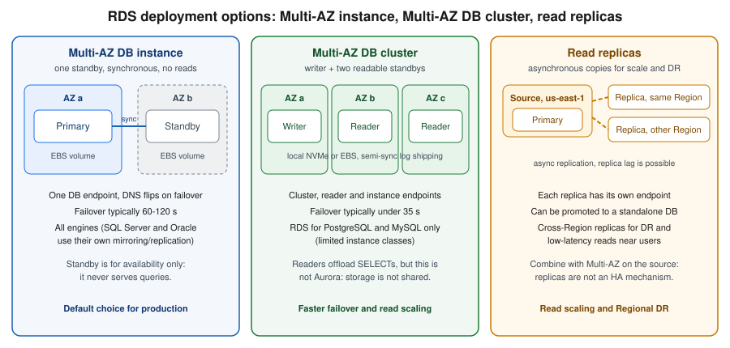

Amazon RDS
|
This content was generated with the assistance of AI and should be verified against the official documentation before being relied on in production. |
Commands and behaviour below are current for AWS CLI v2 (2.37 line), the AWS SDK for Java 2.x and Spring Cloud AWS 4.x
(Spring Boot 4) or 3.4.x (Spring Boot 3.5), checked 2026-10-01 against the RDS User Guide and the engine release
calendars. Engine support dates change several times a year, so treat the tables on this page as a snapshot and
confirm them with aws rds describe-db-engine-versions (see Versions and support calendars) before planning an upgrade. Region
us-east-1 and the account ID 111122223333 are placeholders throughout.
Amazon Relational Database Service (RDS) runs a relational database engine on an instance that AWS provisions, patches, backs up and can fail over for you. You still choose the engine, the instance size, the storage and the network placement, and you still own schema design, queries, users and the decision of when to upgrade; the line is drawn in Cloud Concepts. This page is the full walkthrough for the relational databases that are not Aurora: how to create one safely, connect to it without long-lived passwords, keep it available, back it up, upgrade it with little downtime, watch it and pay for it sensibly. Aurora, with its shared cluster volume and Serverless v2, is on Amazon Aurora; the map of every AWS database against the engines documented on this site is Managed Databases on AWS; the Azure counterpart of this page is PostgreSQL and MySQL on Azure and Azure SQL.
Bookshelf’s catalog-api normally runs on Aurora PostgreSQL (bookshelf-catalog). Here the same catalog database
lives on a plain RDS for PostgreSQL instance named bookshelf-pg, which is the cheaper and simpler starting point
and the right place to learn every RDS concept; moving to Aurora later is a snapshot restore or a replica promotion,
not a rewrite.

Engines and versions
RDS offers six commercial and open-source engines. The engine decides which features exist (Multi-AZ DB clusters, Blue/Green Deployments, RDS Proxy and IAM authentication are not available for all of them), so choose it first.
| Engine | Notes | Licensing and editions |
|---|---|---|
RDS for PostgreSQL |
Extensions (pgvector, PostGIS, |
Open source; included in the instance price. |
RDS for MySQL |
Innovation and LTS release tracks; the 8.4 LTS line is the current production choice. Multi-AZ DB clusters, Blue/Green, RDS Proxy. |
Open source; included in the instance price. |
RDS for MariaDB |
Compatible with MySQL tooling; its own version cadence. Multi-AZ instance, replicas, Blue/Green, RDS Proxy. |
Open source; included in the instance price. |
RDS for SQL Server |
Express, Web, Standard and Enterprise editions; Multi-AZ uses database mirroring or Always On availability groups. |
License included, or bring your own license on dedicated hosts; see Pricing model. |
RDS for Oracle |
Standard Edition Two and Enterprise Edition; option groups enable features such as Oracle Data Guard replicas. |
License included (SE2) or bring your own license. |
RDS for Db2 |
Standard and Advanced editions; check the current licensing models on the RDS for Db2 pricing page. |
Per-edition licensing. |
The generic SQL reference for the engines is in SQL Reference; engine-neutral modelling advice is in Choosing the Right Database. The rest of this page uses PostgreSQL for examples and calls out where MySQL, MariaDB or the commercial engines differ.
Derived from the Amazon RDS User Guide and the RDS features page.
Versions and support calendars
Every major version has an RDS end of standard support date. After it you either upgrade or stay on the version under RDS Extended Support, which is paid per vCPU-hour and lasts up to three years (Extended Support). The dates below were read from the official calendars on 2026-10-01.
| Major version | RDS end of standard support | Extended Support pricing starts | End of Extended Support |
|---|---|---|---|
PostgreSQL 12 |
2025-02-28 |
2025-03-01 |
2028-02-29 |
PostgreSQL 13 |
2026-02-28 |
2026-03-01 |
2029-02-28 |
PostgreSQL 14 |
2027-02-28 |
2027-03-01 |
2030-02-28 |
PostgreSQL 15 |
2028-02-29 |
2028-03-01 |
2031-02-28 |
PostgreSQL 16 |
2029-02-28 |
2029-03-01 |
2032-02-29 |
PostgreSQL 17 |
2030-02-28 |
2030-03-01 |
2033-02-28 |
PostgreSQL 18 |
2031-02-28 |
2031-03-01 |
2034-02-28 |
MySQL 5.7 |
2024-02-29 |
2024-03-01 |
2029-06-30 |
MySQL 8.0 |
2026-07-31 |
2026-08-01 |
2029-07-31 |
MySQL 8.4 |
2029-07-31 |
2029-08-01 |
2032-07-31 |
In words: PostgreSQL 14 leaves standard support in February 2027, MySQL 8.0 left standard support on 31 July 2026, and a new database should start on the newest major version your extensions and drivers support (PostgreSQL 17 or 18, MySQL 8.4). Older guides still show PostgreSQL 12 or MySQL 5.7 examples; those versions are in Extended Support only and cost extra every hour they run.
List what a Region currently offers, and which versions are upgrade targets, with:
aws rds describe-db-engine-versions --engine postgres \
--query 'DBEngineVersions[].{Version:EngineVersion,Family:DBParameterGroupFamily,Targets:ValidUpgradeTarget[].EngineVersion}' \
--output table
# Default minor version for a major version in this Region
aws rds describe-db-engine-versions --engine postgres --engine-version 17 --default-only \
--query 'DBEngineVersions[0].EngineVersion' --output textInstance classes and storage
An instance class is a family plus a size, for example db.m7g.large.
| Family | Meaning | Use for |
|---|---|---|
|
Burstable: baseline CPU plus credits (T4g runs on Graviton). |
Development, test, small low-traffic databases. Unlimited mode can bill extra CPU credits. |
|
General purpose: balanced CPU and memory. |
Most production databases, including Bookshelf. |
|
Memory optimised: more RAM per vCPU. |
Large working sets, heavy caching, analytics-style queries. |
|
Extreme memory or high clock speed. |
Large Oracle, SQL Server and Db2 databases. |
The g suffix means AWS Graviton (Arm). Graviton classes are usually cheaper per unit of work and are supported by the
open-source engines; check aws rds describe-orderable-db-instance-options for what a given engine version offers in
your Region. Not every class is available for every engine, edition or Multi-AZ DB cluster, so never hard-code a class
in a template without testing the exact combination.
aws rds describe-orderable-db-instance-options --engine postgres --engine-version 17 \
--query 'OrderableDBInstanceOptions[?starts_with(DBInstanceClass, `db.m7g`)].{Class:DBInstanceClass,Storage:StorageType,MultiAZ:MultiAZCapable}' \
--output tableDerived from aws rds describe-orderable-db-instance-options and DB instance classes.
Storage types
-
General Purpose SSD gp3 is the default and the right choice for almost everything. Capacity and performance are decoupled: a baseline of IOPS and throughput is included, and larger volumes (and the engines that support it) allow you to provision more IOPS and throughput independently of size. Older guides still show gp2, where performance was tied to size through burst credits; gp2 is still selectable but gp3 is the current approach.
-
Provisioned IOPS SSD (io1, io2 Block Express) for latency-sensitive, IO-heavy databases that need consistent high IOPS. io2 Block Express is the current generation.
-
Magnetic is legacy; do not use it for new databases.
-
Storage autoscaling grows the volume automatically when free space runs low, up to a maximum you set (
--max-allocated-storage). Enable it so a runaway table does not become an outage, and put a CloudWatch alarm on free storage anyway. Storage can grow but never shrink in place; shrinking means a dump and restore or a Blue/Green copy. -
Storage is encrypted with a KMS key chosen at creation time (
--storage-encrypted); you cannot encrypt an existing unencrypted instance in place (see Encrypting an unencrypted database).
Deployment options: Single-AZ, Multi-AZ instance, Multi-AZ DB cluster
| Single-AZ | Multi-AZ DB instance | Multi-AZ DB cluster | |
|---|---|---|---|
Copies |
One instance. |
Primary plus one synchronous standby in another AZ. |
Writer plus two readable standbys in three AZs. |
Standby serves reads |
Not applicable. |
No. |
Yes, through the reader endpoint. |
Typical failover |
Recovery from backup or a replacement host: minutes to longer. |
Automatic, usually one to two minutes (DNS flip). |
Automatic, typically well under a minute. |
Engines |
All. |
All (SQL Server and Oracle use their own replication technology underneath). |
RDS for PostgreSQL and RDS for MySQL only, with a limited set of instance classes. |
Endpoints |
One instance endpoint. |
One instance endpoint; its DNS record moves to the new primary. |
Cluster (writer), reader and individual instance endpoints. |
Use for |
Development, tests, tolerable downtime. |
Default for production. |
Production that needs faster failover or read scaling without managing replicas. |
In a Multi-AZ DB instance deployment the storage is synchronously replicated to the standby, so a committed transaction survives losing an Availability Zone. During planned maintenance (OS patching, minor upgrades) RDS patches the standby first, fails over, then patches the former primary, which shortens the interruption. In a Multi-AZ DB cluster the writer commits after at least one reader has acknowledged the log record, which lowers failover time and gives you two read endpoints but adds some commit latency; it is not Aurora, because each node has its own storage.
Test failover before relying on it:
aws rds reboot-db-instance --db-instance-identifier bookshelf-pg --force-failoverDerived from
aws rds reboot-db-instance,
Multi-AZ DB instance deployments
and Multi-AZ DB cluster deployments.
Applications must tolerate the dropped connections: use a pool that validates connections, short DNS caching (the JVM
caches DNS indefinitely when a security manager is installed; set networkaddress.cache.ttl) or the AWS Advanced JDBC
Wrapper described in Spring Boot datasource.
Read replicas
A read replica is an asynchronously updated copy used to scale reads, to offload reporting, and as the seed for
cross-Region disaster recovery. Replicas have their own endpoint; the application must send reads to it explicitly
(Spring’s read-only routing, or the wrapper’s read/write splitting plugin). Because replication is asynchronous,
reads can lag behind the source: watch ReplicaLag in CloudWatch and do not read your own writes from a replica.
-
For RDS for MySQL, MariaDB and PostgreSQL you can create several replicas of one source, in the same Region or in another Region (cross-Region replicas), and replicas can themselves have replicas up to a documented depth.
-
A replica can be promoted to a standalone instance, which is how you migrate Region or break a replica out for a major-version test.
-
Replicas are not a high-availability mechanism: promotion is a manual (or automated by your own tooling) step with possible data loss equal to the lag. Enable Multi-AZ on the source for HA.
-
Oracle and SQL Server replicas use their own technologies and editions (Oracle Active Data Guard, SQL Server Always On) with extra licensing requirements.
-
Cross-Region replicas incur data transfer charges between Regions.
In the AWS Management Console
-
Open Amazon RDS → Databases, select
bookshelf-pg, choose Actions → Create read replica. -
Pick the destination Region, DB instance class and Multi-AZ setting, name it
bookshelf-pg-replica-1, and choose Create read replica. -
To promote it later: select the replica → Actions → Promote.
With the AWS CLI
export AWS_REGION=us-east-1
aws rds create-db-instance-read-replica \
--db-instance-identifier bookshelf-pg-replica-1 \
--source-db-instance-identifier bookshelf-pg \
--db-instance-class db.m7g.large \
--no-publicly-accessible
# Cross-Region replica: run against the destination Region and use the source ARN
aws rds create-db-instance-read-replica --region eu-west-1 \
--db-instance-identifier bookshelf-pg-replica-eu \
--source-db-instance-identifier arn:aws:rds:us-east-1:111122223333:db:bookshelf-pg \
--kms-key-id alias/aws/rds
aws rds promote-read-replica --db-instance-identifier bookshelf-pg-replica-1Networking and security
RDS instances live in a VPC (the classic EC2-Classic network is gone), so the network layout is your first security control. The VPC building blocks are on VPC Networking; the RDS-specific parts are:
-
DB subnet group: a named set of subnets, at least two in different Availability Zones, that RDS may place the instance (and its standby) in. Use private subnets that have no route to an internet gateway.
-
Publicly accessible: leave it
No. A public instance gets a public IP and DNS name that resolves to it from outside; with a private subnet group and--no-publicly-accessiblethe endpoint only resolves to private addresses. -
Security group: allow the database port (5432 PostgreSQL, 3306 MySQL and MariaDB, 1433 SQL Server, 1521 Oracle, 50000 Db2) only from the security group of the application (the ECS task, Lambda function or EKS node/pod group), never from
0.0.0.0/0. -
Encryption in transit: require TLS (
rds.force_ssl=1for PostgreSQL,require_secure_transport=ONfor MySQL and MariaDB). The Region’s CA bundle is published by AWS; verify the server certificate in the client (sslmode=verify-full). -
Encryption at rest: KMS key chosen at creation; see Secrets Manager, Parameter Store and KMS.
-
Reaching it from a laptop: not through the internet. Use Systems Manager Session Manager port forwarding through a bastion-less EC2 instance or an ECS Exec / SSM-enabled host, or the Client VPN endpoint described in VPN and Hybrid Connectivity.
# Session Manager port forward to the database through an SSM-managed instance in the VPC
INSTANCE_ID=i-0123456789abcdef0
DB_HOST=$(aws rds describe-db-instances --db-instance-identifier bookshelf-pg \
--query 'DBInstances[0].Endpoint.Address' --output text)
aws ssm start-session --target "$INSTANCE_ID" \
--document-name AWS-StartPortForwardingSessionToRemoteHost \
--parameters "host=$DB_HOST,portNumber=5432,localPortNumber=5433"
# then: psql "host=localhost port=5433 dbname=catalog user=catalog_app sslmode=require"Derived from aws ssm start-session and port forwarding to a remote host.
Creating a database
Bookshelf’s bookshelf-pg is a Multi-AZ PostgreSQL 17 instance on Graviton with encrypted gp3 storage, no public
access, a master password that RDS generates and rotates in Secrets Manager, and IAM database authentication enabled.
In the AWS Management Console
-
Check the Region selector (top right), then open Amazon RDS → Databases → Create database.
-
Choose Full configuration (the Easy create option hides networking and backup choices). Engine type: PostgreSQL; Engine version: the latest 17.x. Templates: Production (turns on Multi-AZ and protection defaults) or Dev/Test.
-
Availability and durability: Multi-AZ DB instance deployment (2 instances) for a standby that does not serve reads, or Multi-AZ DB cluster for readable standbys.
-
Settings: DB instance identifier
bookshelf-pg; Master usernamepostgres_admin; Credentials management → Managed in AWS Secrets Manager (choose the default KMS key or your own). Do not type a password. -
Instance configuration: Standard classes →
db.m7g.large(ordb.t4g.mediumfor a lab). -
Storage: General Purpose SSD (gp3), allocated storage 100 GiB, tick Enable storage autoscaling with a maximum of 500 GiB.
-
Connectivity: your VPC, a DB subnet group of private subnets (create it first, see below), Public access → No, a security group that allows port 5432 from the application security group only.
-
Database authentication: Password and IAM database authentication.
-
Monitoring: Database Insights → Advanced (default) or Standard; turn on Enhanced Monitoring if you want OS-level metrics. Additional configuration: initial database name
catalog, the DB parameter group (see Parameter groups and option groups), Backup retention period of at least 7 days, Enable encryption, Enable deletion protection, Enable auto minor version upgrade and a maintenance window. -
Choose Create database. Status moves from Creating to Available in roughly 10 to 20 minutes for a Multi-AZ instance.
With the AWS CLI
First the subnet group (at least two private subnets in different AZs) and a security group:
export AWS_REGION=us-east-1
export ACCOUNT_ID=$(aws sts get-caller-identity --query Account --output text)
SUBNETS="subnet-0aaa1111bbbb2222c subnet-0ddd3333eeee4444f" # private subnets in two AZs
VPC_ID=vpc-0123456789abcdef0
aws rds create-db-subnet-group \
--db-subnet-group-name bookshelf-db-subnets \
--db-subnet-group-description "Private subnets for Bookshelf databases" \
--subnet-ids $SUBNETS
DB_SG=$(aws ec2 create-security-group --group-name bookshelf-pg-sg \
--description "Bookshelf PostgreSQL" --vpc-id "$VPC_ID" --query GroupId --output text)
APP_SG=sg-0abc123abc123abc1 # security group of the catalog-api tasks
aws ec2 authorize-security-group-ingress --group-id "$DB_SG" \
--protocol tcp --port 5432 --source-group "$APP_SG"Derived from aws rds create-db-subnet-group, aws ec2 create-security-group and aws ec2 authorize-security-group-ingress.
Then the parameter group and the instance:
aws rds create-db-parameter-group \
--db-parameter-group-name bookshelf-pg17 \
--db-parameter-group-family postgres17 \
--description "Bookshelf PostgreSQL 17 settings"
aws rds modify-db-parameter-group --db-parameter-group-name bookshelf-pg17 \
--parameters "ParameterName=rds.force_ssl,ParameterValue=1,ApplyMethod=immediate" \
"ParameterName=log_min_duration_statement,ParameterValue=500,ApplyMethod=immediate"
aws rds create-db-instance \
--db-instance-identifier bookshelf-pg \
--engine postgres --engine-version 17 \
--db-instance-class db.m7g.large \
--allocated-storage 100 --max-allocated-storage 500 --storage-type gp3 \
--storage-encrypted \
--master-username postgres_admin --manage-master-user-password \
--db-name catalog \
--db-subnet-group-name bookshelf-db-subnets \
--vpc-security-group-ids "$DB_SG" \
--no-publicly-accessible \
--multi-az \
--enable-iam-database-authentication \
--db-parameter-group-name bookshelf-pg17 \
--backup-retention-period 14 \
--preferred-backup-window 03:00-04:00 \
--preferred-maintenance-window sun:04:30-sun:05:30 \
--auto-minor-version-upgrade \
--deletion-protection \
--database-insights-mode advanced \
--enable-performance-insights --performance-insights-retention-period 465 \
--monitoring-interval 60 \
--monitoring-role-arn "arn:aws:iam::${ACCOUNT_ID}:role/rds-monitoring-role" \
--enable-cloudwatch-logs-exports postgresql upgrade \
--copy-tags-to-snapshot \
--tags Key=app,Value=bookshelf
aws rds wait db-instance-available --db-instance-identifier bookshelf-pg
aws rds describe-db-instances --db-instance-identifier bookshelf-pg \
--query 'DBInstances[0].{Status:DBInstanceStatus,Endpoint:Endpoint.Address,Secret:MasterUserSecret.SecretArn}'Derived from
aws rds create-db-instance,
aws rds create-db-parameter-group,
aws rds modify-db-parameter-group and
Creating an Amazon RDS DB instance.
The Enhanced Monitoring role is an IAM role trusted by monitoring.rds.amazonaws.com with the managed policy
AmazonRDSEnhancedMonitoringRole; the console creates it for you. The Database Insights and Performance Insights
flags overlap while the older feature is being retired, so confirm them with aws rds create-db-instance help (see
Monitoring).
Notes on the flags that matter:
-
--manage-master-user-passwordmakes RDS create the master secret in Secrets Manager, encrypt it, and rotate it (every seven days by default). It cannot be combined with--master-user-password. Older guides generate a password withsecretsmanager get-random-passwordand deploy a rotation Lambda by hand; managed master passwords replace both. -
--no-publicly-accessibleis the default for a database created in a VPC with only private subnets, but state it. -
--deletion-protectionmakesdelete-db-instancefail until you turn the protection off; the Clean up section does so. -
--backup-retention-period 0disables automated backups and point-in-time restore; never do that in production. -
--engine-lifecycle-supportcontrols Extended Support enrolment (Extended Support).
For Multi-AZ DB clusters the commands are aws rds create-db-cluster with --engine postgres, --db-cluster-instance-class,
--storage-type io1 (or gp3 where offered) and --allocated-storage, which creates the three instances in one call;
the options page lists the class and storage combinations.
Parameter groups and option groups
Engine settings live in a DB parameter group. The default parameter group is read-only, so create your own before
you create the instance (changing the group of an existing instance needs a reboot for static parameters). Dynamic
parameters apply immediately; static ones take effect after a reboot, and the instance shows pending-reboot. For
Multi-AZ DB clusters and Aurora there is also a DB cluster parameter group.
-
Name the group after the family (
postgres17,mysql8.4) so the compatibility is obvious; a parameter group is tied to one engine family and cannot be applied to another major version without creating a new one. -
Keep changes in code (CloudFormation
AWS::RDS::DBParameterGroup, or the CLI above) so environments do not drift. -
shared_preload_libraries(PostgreSQL) andmax_connectionsoften need a reboot;max_connectionsdefaults to a value derived from instance memory, so a bigger class means more allowed connections. Connection count is the first limit most applications hit; see RDS Proxy. -
Option groups are an Oracle, SQL Server, MySQL and MariaDB concept for optional engine features (Oracle Data Guard, SQL Server native backup, the MariaDB audit plugin). PostgreSQL does not use them: its extensions are enabled with
CREATE EXTENSION.
Derived from Working with parameter groups and Working with option groups.
Connecting
From inside the VPC the application connects to the instance endpoint on the engine port. Three credential styles are in common use.
-
Master user: the user created with the instance. Use it only to create the application’s own roles; its secret is the one RDS manages in Secrets Manager.
-
Password for an application user, in Secrets Manager: store the application user’s credentials in
bookshelf/catalog/db(see Secrets Manager, Parameter Store and KMS) and let Spring or the task definition read it. -
IAM database authentication: no password at all; the application obtains a short-lived token with its IAM role.
IAM database authentication
IAM authentication replaces the password with an authentication token, valid for 15 minutes for connection establishment (an established session is not cut off when the token expires). The token is signed with the caller’s IAM credentials, so a task role, Lambda execution role or EKS Pod Identity role can connect with no stored secret. It needs TLS, is supported by RDS for PostgreSQL, MySQL and MariaDB (and others, check the matrix), and has a limit on how many new connections per second an instance accepts when every one of them authenticates through IAM, so pair it with a pool or with RDS Proxy.
Enable it (done at creation above, or later):
aws rds modify-db-instance --db-instance-identifier bookshelf-pg \
--enable-iam-database-authentication --apply-immediatelyCreate the database user once, connected as the master user:
-- PostgreSQL
CREATE USER catalog_app WITH LOGIN;
GRANT rds_iam TO catalog_app;
GRANT CONNECT ON DATABASE catalog TO catalog_app;
GRANT USAGE ON SCHEMA public TO catalog_app;
GRANT SELECT, INSERT, UPDATE, DELETE ON ALL TABLES IN SCHEMA public TO catalog_app;
-- MySQL / MariaDB equivalent
-- CREATE USER 'catalog_app'@'%' IDENTIFIED WITH AWSAuthenticationPlugin AS 'RDS';The grants are plain SQL from Data Control Language (DCL). Then allow the role to request tokens for that user. The
resource uses the instance’s DB resource ID (db- followed by letters), not its name:
DBI_RESOURCE_ID=$(aws rds describe-db-instances --db-instance-identifier bookshelf-pg \
--query 'DBInstances[0].DbiResourceId' --output text)
echo "$DBI_RESOURCE_ID"{
"Version": "2012-10-17",
"Statement": [
{
"Sid": "ConnectAsCatalogApp",
"Effect": "Allow",
"Action": "rds-db:connect",
"Resource": "arn:aws:rds-db:us-east-1:111122223333:dbuser:db-ABCDEFGHIJKLMNOPQRSTUVWXYZ/catalog_app"
}
]
}Attach that policy to the catalog-api task role (see ECS and Fargate and Identity and Access). For the master secret that RDS manages, a second policy statement allows reading it only for the operators who need it:
{
"Version": "2012-10-17",
"Statement": [
{
"Sid": "ReadManagedMasterSecret",
"Effect": "Allow",
"Action": ["secretsmanager:GetSecretValue", "secretsmanager:DescribeSecret"],
"Resource": "arn:aws:secretsmanager:us-east-1:111122223333:secret:rds!db-*"
}
]
}Test from a host inside the VPC:
HOST=$(aws rds describe-db-instances --db-instance-identifier bookshelf-pg \
--query 'DBInstances[0].Endpoint.Address' --output text)
TOKEN=$(aws rds generate-db-auth-token --hostname "$HOST" --port 5432 --username catalog_app --region us-east-1)
PGPASSWORD="$TOKEN" psql "host=$HOST port=5432 dbname=catalog user=catalog_app sslmode=verify-full sslrootcert=global-bundle.pem"Derived from
aws rds generate-db-auth-token,
IAM database authentication for MariaDB, MySQL, and PostgreSQL,
Creating and using an IAM policy for IAM database access
and Password management with Amazon RDS and AWS Secrets Manager.
The CA bundle global-bundle.pem comes from the SSL/TLS page.
Spring Boot datasource
The simplest correct setup reads the application user’s credentials from Secrets Manager through Spring Cloud AWS and
uses HikariCP (Spring Boot’s default pool). Spring Cloud AWS flattens the JSON secret into properties, so a secret
with the keys username and password is referenced as placeholders. The generic pattern, including Parameter
Store and Kubernetes secrets, is in Configuration and Profiles; JPA on top of the
datasource is in Spring Data JPA.
<dependency>
<groupId>io.awspring.cloud</groupId>
<artifactId>spring-cloud-aws-starter-secrets-manager</artifactId>
</dependency>
<dependency>
<groupId>org.postgresql</groupId>
<artifactId>postgresql</artifactId>
<scope>runtime</scope>
</dependency>spring:
config:
import: "aws-secretsmanager:bookshelf/catalog/db"
datasource:
url: jdbc:postgresql://bookshelf-pg.abcdefghijkl.us-east-1.rds.amazonaws.com:5432/catalog?sslmode=verify-full&sslrootcert=/etc/ssl/rds/global-bundle.pem
username: ${username}
password: ${password}
hikari:
maximum-pool-size: 10
max-lifetime: 1500000 # 25 min, below any idle-connection timeout in the network path
connection-timeout: 5000
jpa:
hibernate:
ddl-auto: validatePool sizing matters more than most settings: each connection costs memory on the server, and max_connections is
fixed by the instance class and parameter group. Ten pooled connections per task times twenty tasks is already 200.
Size the pool for the database, not for the number of threads, and put RDS Proxy in front when tasks scale out
(RDS Proxy). Schema changes belong in a migration tool run at deploy time, not in ddl-auto; see
Evolving the Database Model.
For IAM authentication, failover handling and read/write splitting, use the AWS Advanced JDBC Wrapper, an open-source driver wrapper that sits in front of the PostgreSQL, MySQL or MariaDB driver:
<dependency>
<groupId>software.amazon.jdbc</groupId>
<artifactId>aws-advanced-jdbc-wrapper</artifactId>
<!-- use the current release; pin it in your BOM or dependencyManagement -->
</dependency>spring:
datasource:
driver-class-name: software.amazon.jdbc.Driver
url: jdbc:aws-wrapper:postgresql://bookshelf-pg.abcdefghijkl.us-east-1.rds.amazonaws.com:5432/catalog?wrapperPlugins=iam,efm2&iamRegion=us-east-1&sslmode=verify-full&sslrootcert=/etc/ssl/rds/global-bundle.pem
username: catalog_app # no password: the iam plugin supplies a fresh token for each new connection
hikari:
maximum-pool-size: 10
max-lifetime: 600000 # 10 min, so connections are replaced well before a token's age mattersThe iam plugin signs a token with the default credential chain (the task role) every time Hikari opens a
connection, so no secret is stored; efm2 is the enhanced failure monitoring plugin that detects a dead host faster
than the TCP timeout. On Multi-AZ DB clusters and Aurora add the failover2 plugin for topology-aware failover, and
readWriteSplitting to route read-only transactions to the readers. Plugin names and defaults change between wrapper
releases, so confirm them in the wrapper documentation for the
version you pin. Without the wrapper, the AWS SDK for Java 2.x can generate the token itself:
package com.example.bookshelf.catalog;
import software.amazon.awssdk.regions.Region;
import software.amazon.awssdk.services.rds.RdsClient;
import software.amazon.awssdk.services.rds.RdsUtilities;
public final class RdsTokenProvider {
private final RdsUtilities utilities = RdsClient.builder().region(Region.US_EAST_1).build().utilities();
public String token(String hostname, int port, String username) {
return utilities.generateAuthenticationToken(r -> r.hostname(hostname).port(port).username(username));
}
}Derived from
Connecting to your DB instance using IAM authentication and the AWS SDK for Java,
AWS Advanced JDBC Wrapper and
Spring Cloud AWS Secrets Manager.
A short-lived token must not be stored in a Hikari password property for the life of the pool, because new pooled
connections would reuse an expired token; that is why the wrapper (or a custom DataSource) generates one per connection.
Credentials: Secrets Manager and rotation
Two secrets are involved and they should not be confused. The master secret is created and rotated by RDS itself
when you use --manage-master-user-password; its name starts with rds!db-, you cannot edit its rotation schedule
freely, and you should not hand it to applications. The application secret bookshelf/catalog/db holds the
credentials of catalog_app for services that cannot use IAM authentication; rotate it with Secrets Manager rotation
(a Lambda function managed from the console, or the managed rotation templates) and reference it from the task
definition or Spring configuration. Switching an existing instance to a managed master password is
aws rds modify-db-instance --manage-master-user-password, and back again with --no-manage-master-user-password
plus --master-user-password.
RDS Proxy
RDS Proxy is a managed connection pool between the application and the database. It multiplexes many client connections over fewer database connections, absorbs connection storms (a Lambda burst, a rolling deployment of fifty tasks), keeps client connections alive through a failover so the interruption shrinks, and lets you enforce IAM authentication for clients. Facts from the official limits page worth planning around:
-
The proxy must be in the same VPC as the database and is never publicly accessible, so a laptop needs a tunnel.
-
One proxy has one target (a writer instance or cluster); extra read-only endpoints can be added (up to 20 per proxy). Read replicas are reached through those proxy endpoints or directly, not by registering them as targets.
-
Each account can have up to 20 proxies by default; each proxy accepts up to 200 secrets.
-
The proxy listens on 3306 for MySQL and MariaDB and 5432 for PostgreSQL, whatever port the database uses.
-
Pinning: statements that change session state (for example
SETof some session variables, temporary tables, prepared statements on some engines, text larger than 16 KB) pin a client to one database connection, which removes the multiplexing benefit. TheDatabaseConnectionsCurrentlySessionPinnedmetric reveals it. -
Changing the database parameter group affects the proxy only after the database is rebooted.
In the AWS Management Console
-
Open Amazon RDS → Proxies → Create proxy.
-
Engine family: PostgreSQL; Proxy identifier
bookshelf-pg-proxy; require Transport Layer Security. -
Target group: select the database
bookshelf-pg; set Connection pool maximum connections (a percentage of the database’smax_connections). -
Authentication: choose the Secrets Manager secret(s) the proxy will use to log in as database users, and the IAM authentication setting for clients (Required is the secure choice). Create or choose the IAM role that lets the proxy read those secrets.
-
Connectivity: subnets (at least two AZs) and a security group that allows the application group in and the proxy to reach the database group.
-
Choose Create proxy, then point the application at the proxy endpoint instead of the instance endpoint.
With the AWS CLI
SECRET_ARN=arn:aws:secretsmanager:us-east-1:111122223333:secret:bookshelf/catalog/db-AbCdEf
aws rds create-db-proxy \
--db-proxy-name bookshelf-pg-proxy \
--engine-family POSTGRESQL \
--auth "AuthScheme=SECRETS,SecretArn=${SECRET_ARN},IAMAuth=REQUIRED" \
--role-arn "arn:aws:iam::${ACCOUNT_ID}:role/bookshelf-rds-proxy-role" \
--vpc-subnet-ids $SUBNETS \
--vpc-security-group-ids "$DB_SG" \
--require-tls
aws rds register-db-proxy-targets \
--db-proxy-name bookshelf-pg-proxy \
--db-instance-identifiers bookshelf-pg
aws rds describe-db-proxies --db-proxy-name bookshelf-pg-proxy \
--query 'DBProxies[0].{Status:Status,Endpoint:Endpoint}'Derived from
aws rds create-db-proxy,
aws rds register-db-proxy-targets and
Getting started with RDS Proxy.
The proxy role is trusted by rds.amazonaws.com and allows secretsmanager:GetSecretValue on the secret and
kms:Decrypt on its key. The application’s task role then needs rds-db:connect against the proxy resource
(arn:aws:rds-db:us-east-1:111122223333:dbuser:prx-ABCDEFGHIJKLMNOPQRSTUVWXYZ/catalog_app), not the instance.
Lambda functions that open a connection per invocation are the textbook case; see AWS Lambda.
Backups, snapshots and point-in-time restore
Automated backups are a daily snapshot plus transaction logs streamed to S3, kept for the backup retention period (0 to 35 days). Together they allow point-in-time restore (PITR) to any second within the window up to the latest restorable time, usually about five minutes behind. Backup storage up to the size of the provisioned database storage is included at no extra charge for each Region, which is why the pricing model has a "beyond free allowance" line. Automated backups are deleted with the instance unless you keep them.
Manual snapshots are taken on demand, never expire, survive deleting the instance, can be shared with other accounts or copied to other Regions, and cost snapshot storage until you delete them. Restores always create a new instance (new endpoint, new security group and parameter group assignment); they never overwrite the running one. For Multi-AZ DB instance deployments, snapshots and backups are taken from the standby so the primary is not paused.
In the AWS Management Console
-
Snapshot: Databases →
bookshelf-pg→ Actions → Take snapshot, name itbookshelf-pg-pre-release. -
Restore a snapshot: Snapshots → select → Actions → Restore snapshot, set the identifier, class, VPC and subnet group, and choose Restore DB instance.
-
Point in time: Databases →
bookshelf-pg→ Actions → Restore to point in time, choose Latest restorable time or Custom date and time, and name the new instance. -
Cross-Region copy: Snapshots → select → Actions → Copy snapshot, pick the destination Region and, for an encrypted snapshot, the KMS key in that Region. Automated backup replication (Actions → Manage cross-Region replication) continuously copies backups to another Region.
With the AWS CLI
aws rds create-db-snapshot --db-instance-identifier bookshelf-pg \
--db-snapshot-identifier bookshelf-pg-pre-release
aws rds wait db-snapshot-available --db-snapshot-identifier bookshelf-pg-pre-release
# Restore a snapshot into a new instance
aws rds restore-db-instance-from-db-snapshot \
--db-instance-identifier bookshelf-pg-restored \
--db-snapshot-identifier bookshelf-pg-pre-release \
--db-subnet-group-name bookshelf-db-subnets \
--vpc-security-group-ids "$DB_SG" --no-publicly-accessible
# Point-in-time restore to the latest restorable time, or to a specific UTC timestamp
aws rds restore-db-instance-to-point-in-time \
--source-db-instance-identifier bookshelf-pg \
--target-db-instance-identifier bookshelf-pg-pitr \
--use-latest-restorable-time
# --restore-time 2026-10-01T09:30:00Z
# Copy a snapshot to another Region (run in the destination Region)
aws rds copy-db-snapshot --region eu-west-1 \
--source-db-snapshot-identifier arn:aws:rds:us-east-1:111122223333:snapshot:bookshelf-pg-pre-release \
--target-db-snapshot-identifier bookshelf-pg-pre-release-eu \
--source-region us-east-1 --kms-key-id alias/aws/rdsDerived from aws rds create-db-snapshot, aws rds restore-db-instance-from-db-snapshot, aws rds restore-db-instance-to-point-in-time, aws rds copy-db-snapshot and Restoring a DB instance to a specified time. AWS Backup (see Governance, Security and Compliance) can manage RDS snapshots on a schedule across accounts and Regions with vault locks. Rehearse a restore: an untested backup is only a hope, and the restored instance needs its own users' grants, parameter group and proxy registration checked.
Encrypting an unencrypted database
You cannot switch encryption on for a running instance. Take a snapshot, copy it with a KMS key (which produces an encrypted copy), and restore the copy into a new instance, then repoint the application:
aws rds create-db-snapshot --db-instance-identifier legacy-db --db-snapshot-identifier legacy-db-plain
aws rds copy-db-snapshot --source-db-snapshot-identifier legacy-db-plain \
--target-db-snapshot-identifier legacy-db-encrypted --kms-key-id alias/aws/rds
aws rds restore-db-instance-from-db-snapshot --db-instance-identifier legacy-db-enc \
--db-snapshot-identifier legacy-db-encrypted --storage-encryptedDerived from Encrypting Amazon RDS resources. The restore is a full copy, so for a large database plan the cutover (stop writes, take a final snapshot or restore point, switch the connection string) as a rehearsed runbook.
Blue/Green Deployments
A blue/green deployment keeps a synchronized staging copy ("green") of your production database ("blue"), lets you change it (major or minor engine upgrade, parameter changes, a new storage layout) while production keeps serving, and then switches over: RDS promotes green, renames endpoints so the application’s connection string does not change, and reports typically less than a minute of downtime. It is the recommended way to do major-version upgrades for RDS for MySQL, MariaDB and PostgreSQL (check the engine support list; Aurora has its own page).
Typical flow: create the deployment pointing at a target engine version and parameter group, wait until green is in sync, run your tests against green’s own endpoint, switch over, keep blue for a while as a rollback reference, then delete the deployment and the old blue instance.
In the AWS Management Console
-
Databases → select
bookshelf-pg→ Actions → Create Blue/Green Deployment. -
Give the deployment a name, choose the Engine version and DB parameter group for the green environment (for a major upgrade the new parameter group must belong to the new family), and choose Create.
-
When the status is Available, test green. Then select the deployment → Switch over, set the timeout, confirm.
-
After validating: Delete the deployment (optionally Delete blue databases); until you do, both sides cost money.
With the AWS CLI
aws rds create-blue-green-deployment \
--blue-green-deployment-name bookshelf-pg-17-to-18 \
--source "arn:aws:rds:us-east-1:${ACCOUNT_ID}:db:bookshelf-pg" \
--target-engine-version 18 \
--target-db-parameter-group-name bookshelf-pg18
BGD=$(aws rds describe-blue-green-deployments \
--filters Name=blue-green-deployment-name,Values=bookshelf-pg-17-to-18 \
--query 'BlueGreenDeployments[0].BlueGreenDeploymentIdentifier' --output text)
aws rds switchover-blue-green-deployment \
--blue-green-deployment-identifier "$BGD" --switchover-timeout 300
aws rds delete-blue-green-deployment \
--blue-green-deployment-identifier "$BGD" --no-delete-targetDerived from
aws rds create-blue-green-deployment,
aws rds switchover-blue-green-deployment,
aws rds delete-blue-green-deployment and
Using Amazon RDS Blue/Green Deployments.
Deleting the deployment (with --no-delete-target, the default) removes only the deployment object and leaves both
sets of instances in place: after a switchover the previous production instance is kept under a renamed identifier
ending in -old1, and you delete it yourself with delete-db-instance once you no longer need a rollback. Use
--delete-target only to discard the green environment of a deployment that was never switched over. Limitations to read before starting: green is a replica until switchover,
so some DDL and writes on green can break replication, some features (for example certain extension upgrades or
replicas of the source) restrict what you may do, and RDS Proxy has a dedicated section on its behaviour during
switchover (see Using RDS Proxy with Blue/Green Deployments).
Upgrades, maintenance and Extended Support
Minor versions carry security and bug fixes and are compatible; with --auto-minor-version-upgrade RDS applies them
in the maintenance window. Major versions can change behaviour and are never applied automatically; you request
them. Options in increasing order of safety: an in-place modify-db-instance --engine-version (downtime for the
whole upgrade), restore a snapshot and upgrade the copy to rehearse, or a Blue/Green deployment for a near-zero
downtime cutover. Before a PostgreSQL major upgrade run pg_upgrade prechecks via the console or CLI’s
--allow-major-version-upgrade, upgrade extensions after (ALTER EXTENSION … UPDATE), and run ANALYZE because
planner statistics are not carried over.
aws rds modify-db-instance --db-instance-identifier bookshelf-pg \
--engine-version 17.7 --apply-immediately # minor version, example number only
aws rds describe-pending-maintenance-actions \
--filters Name=db-instance-id,Values=bookshelf-pg
aws rds apply-pending-maintenance-action --resource-identifier \
"arn:aws:rds:us-east-1:${ACCOUNT_ID}:db:bookshelf-pg" \
--apply-action system-update --opt-in-type immediateDerived from aws rds modify-db-instance, aws rds describe-pending-maintenance-actions, Maintaining a DB instance and Upgrading the PostgreSQL DB engine for Amazon RDS. Pick a maintenance window (30 minutes minimum, weekly) outside Bookshelf’s traffic peak; maintenance that needs a restart (some OS or engine patches) happens there, and a Multi-AZ deployment shortens the interruption by patching the standby first. Required maintenance that you defer can still be forced after its deadline.
Extended Support
RDS Extended Support lets a major version that has passed its RDS end of standard support keep running with
security fixes for critical and high CVEs and bug fixes, for a per-vCPU-hour fee that rises in year three
(Versions and support calendars shows the start and end dates). It is controlled by the EngineLifecycleSupport setting:
-
Created or restored with it enabled (the default for new instances): when the standard support date passes, RDS enrols the instance automatically and starts billing the next day, without a restart or engine change.
-
Created or modified with
--engine-lifecycle-support open-source-rds-extended-support-disabled: RDS upgrades the instance to the next supported major version after the end-of-standard-support date, in a maintenance window, with the usual major-upgrade risk. You can change the setting at any time without downtime (for Multi-AZ DB clusters and Aurora change it on the cluster). -
After the end of Extended Support (up to three years after the standard date) RDS upgrades the instance regardless.
aws rds modify-db-instance --db-instance-identifier bookshelf-pg \
--engine-lifecycle-support open-source-rds-extended-support-disabled
aws rds describe-db-instances --db-instance-identifier bookshelf-pg \
--query 'DBInstances[0].EngineLifecycleSupport'Derived from Amazon RDS Extended Support and creating a DB instance with Extended Support. Treat Extended Support as a bridge, not a destination: the fee is the hidden cost driver of an old but forgotten database, and the calendar above lists which Bookshelf-style versions are already past the line (PostgreSQL 12 and 13, MySQL 5.7 and 8.0).
Monitoring
RDS publishes metrics to CloudWatch for free (CPUUtilization, FreeableMemory, FreeStorageSpace,
DatabaseConnections, ReadIOPS and WriteIOPS, latency, ReplicaLag, BurstBalance for burstable classes). Alarm
on at least free storage, CPU, freeable memory, connections and replica lag; dashboards and alarm actions are in
Monitoring and Observability.
-
Enhanced Monitoring installs an agent that reports OS-level metrics (per-process CPU and memory, file system) every 1 to 60 seconds to CloudWatch Logs, using the monitoring role created above; it is billed as CloudWatch Logs ingestion.
-
CloudWatch Database Insights is the current database load tool. It shows database load (average active sessions) split by wait events, SQL statements, hosts and users, with an Advanced mode that adds lock diagnostics, execution-plan capture and fleet-level views, and a Standard mode with basic load analysis and shorter history; per the RDS User Guide Advanced is the default for new instances, and retention can be extended. Billing is by vCPU-hour of the monitored instance, so it appears in the cost drivers.
-
Performance Insights was the previous product. The RDS User Guide now documents its dashboards and API under Database Insights. AWS announced end of life for the Performance Insights console experience on 2026-07-31, which has passed: the console now redirects to Database Insights, and instances that took no action default to the Standard mode with their existing retention period. The Performance Insights API (
aws pi) is unchanged. Check the Database Insights page before relying on the Performance Insights flags in automation. Older guides still show Performance Insights as the only database-load tool. -
Logs: export engine logs to CloudWatch Logs (
--enable-cloudwatch-logs-exports postgresql upgrade; MySQL exportserror general slowquery audit). The slow-query log andlog_min_duration_statementare the first stop when a query is slow; see Diagnosing and Fixing Slow Queries. -
Events: RDS emits events (failover, maintenance, low storage) to EventBridge and SNS; subscribe with
aws rds create-event-subscription.
aws cloudwatch put-metric-alarm --alarm-name bookshelf-pg-free-storage \
--namespace AWS/RDS --metric-name FreeStorageSpace \
--dimensions Name=DBInstanceIdentifier,Value=bookshelf-pg \
--statistic Minimum --period 300 --evaluation-periods 3 \
--threshold 10737418240 --comparison-operator LessThanThreshold \
--alarm-actions "arn:aws:sns:us-east-1:${ACCOUNT_ID}:bookshelf-alerts"
aws logs tail "/aws/rds/instance/bookshelf-pg/postgresql" --since 30mpgvector on RDS for PostgreSQL
RDS for PostgreSQL ships the pgvector extension, so Bookshelf’s semantic book search can store embeddings next to the
catalog rows without a separate vector database. The extension is created per database as a user with the
rds_superuser role; check which version your engine release provides first, because HNSW and quantized types arrive
with newer extension versions.
SELECT name, default_version, installed_version FROM pg_available_extensions WHERE name = 'vector';
CREATE EXTENSION IF NOT EXISTS vector;
ALTER TABLE book ADD COLUMN embedding vector(1024);
CREATE INDEX book_embedding_hnsw ON book USING hnsw (embedding vector_cosine_ops);
SELECT id, title FROM book ORDER BY embedding <=> $1 LIMIT 10;Indexing choices (HNSW versus IVFFlat), distance operators and filtering are explained in
PostgreSQL & pgvector and ANN Indexes: Flat, IVF, HNSW and Beyond; how this option
compares with OpenSearch, Aurora and S3 Vectors is in Comparing Vector Databases. An
HNSW index has to fit in memory to be fast, so size the instance class for it (memory-optimised db.r classes).
Derived from Using pgvector on Amazon RDS for PostgreSQL.
Pricing model
RDS prices change and differ by Region, engine and edition, so no figures are given here; use the RDS pricing page and the AWS Pricing Calculator for the engine you pick (pricing links last checked 2026-10-01). The cost drivers, in rough order of impact:
-
Instance hours for the class, per second with a one-minute minimum. Multi-AZ DB instance deployments pay for the standby; a Multi-AZ DB cluster pays for three instances. Stopping an instance pauses compute billing for up to seven days at a time, after which RDS starts it again; storage keeps billing.
-
Reserved Instances and Savings Plans-style commitments (RDS Reserved Instances) discount steady production instances; size-flexible within a family for open-source engines.
-
Storage: provisioned GiB-months by type, plus provisioned IOPS and throughput above the gp3 baseline, plus io1 or io2 IOPS. Autoscaling only grows, so a one-off spike keeps costing.
-
Backups: backup storage beyond the free allowance equal to the database size, manual snapshots until deleted, and cross-Region copies and replication.
-
Data transfer: cross-AZ traffic between the application and the database (and to a Multi-AZ standby, which is included), cross-Region replication, and transfer out to the internet.
-
Licensing for SQL Server, Oracle and Db2 (license included versus bring your own), a large multiplier on small instances.
-
Extended Support: per-vCPU-hour fee after the end of standard support (Extended Support).
-
Monitoring: Database Insights (per vCPU-hour of the instance, by mode), Enhanced Monitoring and log exports as CloudWatch charges, and RDS Proxy per vCPU-hour of the database it fronts.
-
Public IPv4 addresses, if the instance is public, are charged per hour.
The RDS Free Tier plan for new accounts has limited instance hours on small burstable classes; check
Cost Management and Support and the pricing page for the current terms rather than assuming a
free database. Cheap lab settings: Single-AZ, db.t4g.micro/small, 20 GiB gp3, backup retention 1, and delete
everything afterwards.
Limits and quotas
Per-Region quotas (visible in Service Quotas → Amazon Relational Database Service) include the number of DB instances, total storage, DB subnet groups, parameter groups, snapshots, read replicas per source and RDS Proxies (20 by default). Per-engine limits (maximum database size, table size, connections) are in the engine chapters of the user guide. Request increases before a load test, not during one.
Derived from Quotas and constraints for Amazon RDS.
Troubleshooting
| Symptom | Likely cause | What to check or do |
|---|---|---|
|
Security group, route or subnet; the instance is private and you are outside the VPC. |
Confirm the instance is in the VPC you expect ( |
|
|
Add |
|
Token expired, wrong user, missing |
Generate a fresh token, check |
|
Pools times replicas exceed |
Reduce pool sizes, add RDS Proxy, or move to a bigger class; check |
Instance stuck in |
Free space exhausted or autoscaling at the maximum. |
Raise |
High |
Long-running queries on the replica, heavy writes on the source, undersized replica. |
Look at replica CPU and IO, queries on the replica, and size the replica like the source. |
Failover took longer than expected |
Large transactions to recover, DNS caching, pool without validation. |
Review |
Parameter change has no effect |
Static parameter, or the instance is |
|
Restore ended with a different configuration |
A restored instance gets default parameter group, security group and subnet group unless you pass them. |
Specify |
|
Class not supported for the engine, Multi-AZ DB cluster or storage type. |
|
Delete fails |
Deletion protection is on. |
|
Unexpected extra line item |
Extended Support, idle instance, snapshots left behind, Database Insights Advanced. |
Cost Explorer grouped by usage type; |
Start with the events and the log tail:
aws rds describe-events --source-type db-instance --source-identifier bookshelf-pg --duration 1440 \
--query 'Events[].[Date,Message]' --output text
aws rds describe-db-instances --db-instance-identifier bookshelf-pg \
--query 'DBInstances[0].{Status:DBInstanceStatus,Pending:PendingModifiedValues,Params:DBParameterGroups}'Derived from aws rds describe-events and Troubleshooting for Amazon RDS.
Clean up
Delete in dependency order. RDS keeps taking money for stopped storage, snapshots and Extended Support, so check each step. Deletion protection must be turned off first, and you choose whether to take a final snapshot.
# Blue/Green, replicas and proxy first
aws rds delete-db-proxy --db-proxy-name bookshelf-pg-proxy
aws rds delete-db-instance --db-instance-identifier bookshelf-pg-replica-1 --skip-final-snapshot
aws rds delete-db-instance --region eu-west-1 --db-instance-identifier bookshelf-pg-replica-eu --skip-final-snapshot
# The database: drop protection, keep a final snapshot, delete automated backups
aws rds modify-db-instance --db-instance-identifier bookshelf-pg --no-deletion-protection --apply-immediately
aws rds delete-db-instance --db-instance-identifier bookshelf-pg \
--final-db-snapshot-identifier bookshelf-pg-final --delete-automated-backups
# Restored copies and manual snapshots you no longer need
aws rds delete-db-instance --db-instance-identifier bookshelf-pg-restored --skip-final-snapshot
aws rds delete-db-snapshot --db-snapshot-identifier bookshelf-pg-pre-release
# Supporting resources
aws rds delete-db-parameter-group --db-parameter-group-name bookshelf-pg17
aws rds delete-db-subnet-group --db-subnet-group-name bookshelf-db-subnets
aws ec2 delete-security-group --group-id "$DB_SG"Derived from
aws rds delete-db-instance,
aws rds delete-db-proxy,
aws rds delete-db-snapshot,
aws rds delete-db-parameter-group and
aws rds delete-db-subnet-group.
In the console: Amazon RDS → Proxies and Databases → select → Actions → Delete (type delete me to
confirm and choose whether to create a final snapshot and keep automated backups), then Snapshots, Parameter groups
and Subnet groups. The master secret created by --manage-master-user-password is deleted with the instance; the
application secret bookshelf/catalog/db is not, and Secrets Manager keeps a deleted secret for a recovery window
of 7 to 30 days unless you force deletion. Delete the Enhanced Monitoring role, the proxy role and the IAM policy
if they are no longer used, and the CloudWatch log groups /aws/rds/instance/bookshelf-pg/*, which RDS leaves
behind.
Related pages
-
Amazon Aurora covers Aurora PostgreSQL and MySQL, Serverless v2, and the RDS Data API.
-
Managed Databases on AWS maps every database on this site to its AWS option and lists the concerns common to all of them.
-
Amazon DynamoDB, DocumentDB and MongoDB on AWS, OpenSearch and Search on AWS and Caching, Graph and Partner Databases cover the non-relational options.
-
VPC Networking and Secrets Manager, Parameter Store and KMS cover the network and secret/key pieces used above.
-
PostgreSQL and MySQL on Azure and Azure SQL are the Azure counterparts.
-
The SQL language itself is in SQL Reference, transactions and isolation in Transaction Control, and migration tools in Evolving the Database Model.